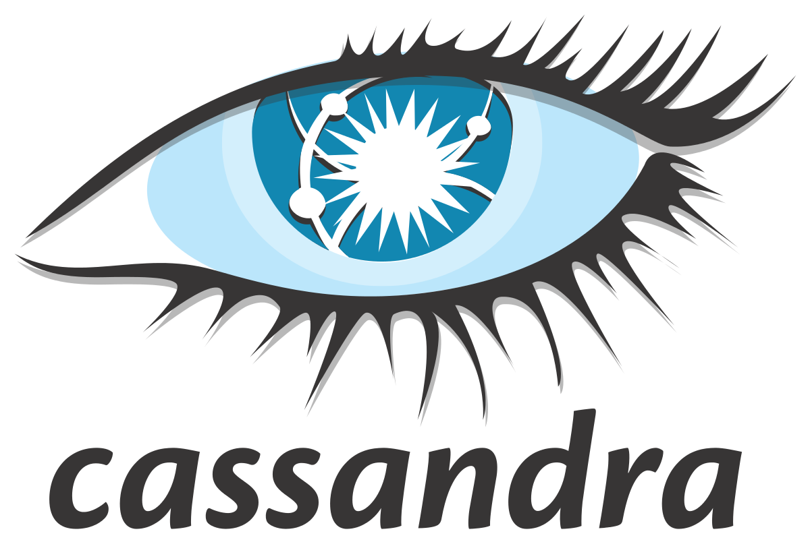
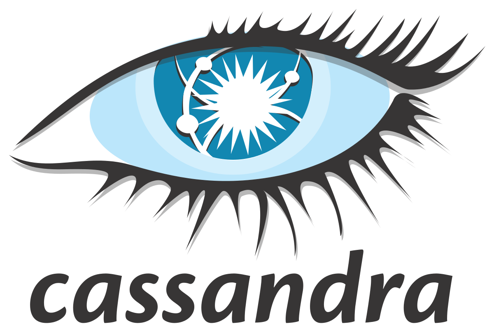
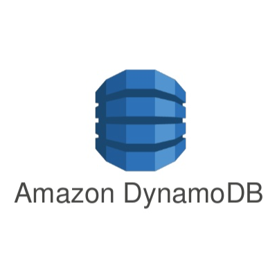
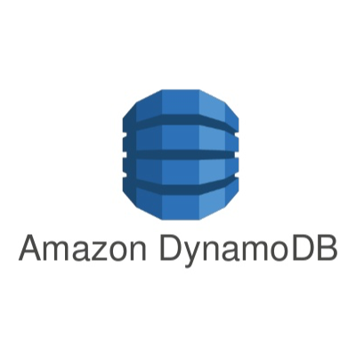
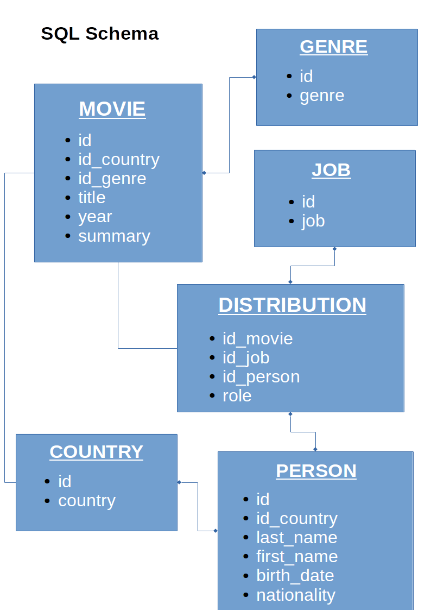
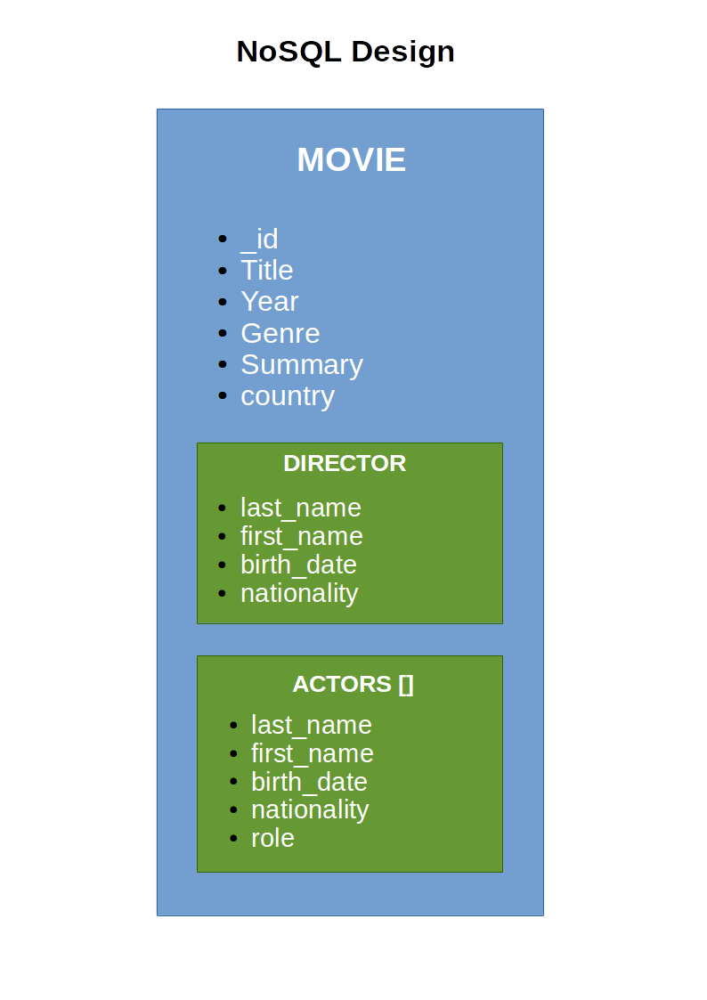

MongoDB
Une base de données documentaire
NoSQL
Formation basée sur MongoDB 3.2
by Jean-Baptiste Le Metayer / 24ème
SGBDR
- Depuis 1970
- Organisation en tables
- Définition d'un schéma
- Manipulation et recherche avec SQL
- Propriétés ACID des transactions :
- Atomicité, Tout ou rien
- Cohérence, Respect des contraintes
- Isolation, Pas d'interférence lors du traitement
- Durabilité, Garantire l'écriture sur disque
L'internet mondial
Années 2000, Les géants souffraient des limitations des SGBDR :
- Clusters répartis dans le monde
- Quantité gigantesque de données
Principaux besoins :
- Performance
- Réplication
- Scalabilité
Solutions
En 2009 à San Francisco, Convention NoSQL
NoSQL = Not Only SQL
Ex: MySQL + ElasticSearch
Inauguration de la communauté des développeurs de logiciel NoSQL.
 


 

NoSQL
4 catégories de base de données NoSQL
- Clefs / valeurs (Redis, DynamoDB, ...)
- Colonnes (Cassandra, BigTable, ...)
- Graphes (Neo4J, ...)
- Documents (CouchDB, MongoDB, ...)
Les principes du NoSQL
- Pas de contraintes (schema, relation, transaction, ...)
- Big data et performances
- Scalabilité horizontale et haute disponibilité
MongoDB - SQL vs NoSQL


MongoDB - JSON
Le "JavaScript Object Notation" est un format de données textuelles dérivé de la notation des objets JS représentant de l’information structurée
{
"title": "Vertigo",
"year": 1958,
"genre": "drame",
"summary": "Scottie Ferguson, ancien inspecteur de police, est sujet au vertige depuis qu'il a vu mourir son collègue. Elster, son ami, le charge de surveiller sa femme, Madeleine, ayant des tendanc s suicidaires. Amoureux de la jeune femme Scottie ne remarque pas le piège qui se trame autour de lui et dont il va être la victime... ",
"country": "USA",
"director": {
"last_name": "Hitchcock",
"first_name": "Alfred",
},
"actors": [
{
"first_name": "James",
"last_name": "Stewart",
"role": "John Ferguson"
},
{
"first_name": "Kim",
"last_name": "Novak",
"role": "Madeleine Elster"
}
]
}
MongoDB - Propriétés
- Manipule des objets BSON (Binary JSON)
- Le document est l'unité de base
- Les collections (~ tables) regroupent des documents
- Les bases de données regroupent les collections
- Pas de schéma prédéfini (évolutivité)
- Le champ "_id" est obligatoire et unique (type : ObjectId)
- Mise à jour atomique d'un document
MongoDB - Evolutions majeures
Map/Reduce, Replication et failover, Sharding
Framework d'agrégation, Données géospatiales, Recherche textuelle
Moteur de stockage WiredTiger
MongoDB - Outils
- mongo : client shell JS
- mongod : serveur
- mongodump : Export binaire
- mongorestore : Import binaire
- mongoexport : Export JSON/CSV
- mongoimport : Import JSON/CSV
- mongofiles : Gestion de fichiers GridFS
- mongooplog : Copie d'oplog
- mongoperf : Stats I/O
- mongostat : Etat d'une instance
- mongotop : Suivi runtime
MongoDB - Vigilances
- 16 Mo = limite d'un doc. JSON
- Design des données selon les besoins
- Gestion des index
- Utilisation de la RAM (Working Set)
- Architecture 64b (WT, production)